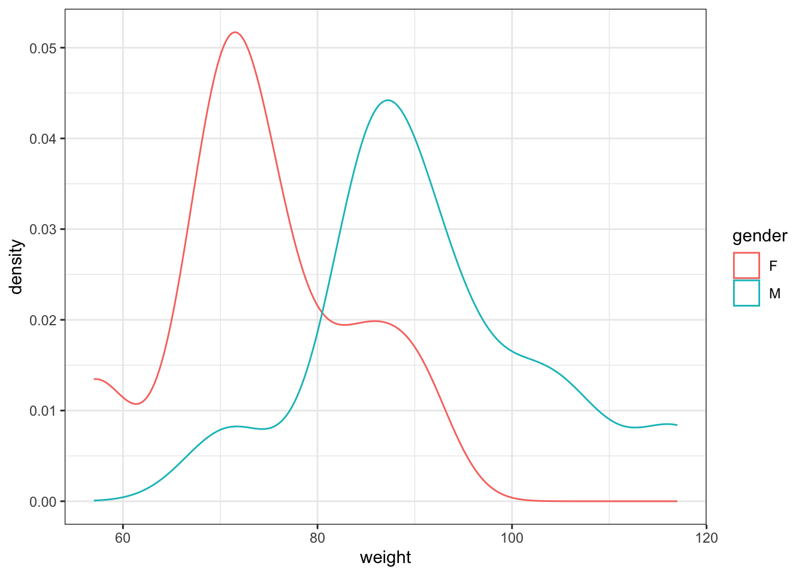

library(tidyverse)
library(patchwork)
weight <- tibble(gender=c(rep("F",8),rep("M",11)),
weight=c(57,84,90,71,71,77,68,73,
71,93,101,84,88,117,86,86,93,86,106))경영통계분석 과제5
Problem 1.
- In a given situation, suppose H0 was not rejected at α=.02. Answer the following questions as “yes”, “no”, or “can’t tell” as the case may be.
- Would H0 also be retained at α=.01?
- Would H0 also be retained at α=.05?
- Is the p-value smaller than .02?
Answer
H0가 \(\alpha=0.02\)에서 기각되지 않았다는 것은, 주장하고자 하는 대립가설에 대한 통계량의 p-value가 0.02보다 크다는 의미입니다.
따라서, 우리가 알 수 있는 것은 0.02보다 낮은 신뢰수준에서 H0를 기각할 수 없다는 것 뿐입니다.
- Yes
- Can’t tell
- No
Problem 2.
- A company’s mixed nuts are sold in cans and the label says that 25% of the contents is cashews. Suspecting that this might be an overstatement, an inspector takes a random sample of 35 cans and measures the percent weight of cashews [i.e. 100(weight of cashews/weight of all nuts)] in each can. The mean and standard deviation of these measurements are found to be 23.5 and 3.1, respectively. Do these results constitute strong evidence in support of the inspector’s belief?
Identify H0 and H1.
Carry out the hypothesis test at the 5% level of significance using the p-value (use normal distribution).
Answer
H0 : 캐슈넛의 포함비율은 25%이다. (\(\mu=25\))
H1 : 캐슈넛의 포함비율은 25%보다 낮아 표기가 과장되었다. (\(\mu<25\))
정규분포 가정 하에서 표본의 크기가 충분히 크므로 z검정을 수행할 수 있으며, z통계량 \(z_0\) 및 p-value는 아래와 같이 산출할 수 있습니다.
\[z_0=\frac{\bar{X}-\mu}{s/\sqrt{35}}=\frac{-1.5}{3.1/\sqrt{35}}=-2.86,\;P(Z<z_0=-2.86)=0.0021\]
p-value=0.0021<0.05이므로, 5% 신뢰수준에서 귀무가설을 기각할 수 있습니다.
이는 캐슈넛의 포함비율이 25% 보다 낮다는 조사자의 추정을 지지하는 결과입니다.
심지어, p-value가 매우 낮아 1% 신뢰수준이라고 하더라도 귀무가설을 기각할 수 있습니다.
결론적으로, 캐슈넛의 포함비율이 25% 보다 낮다는 조사자의 추정은 합리적으로 보입니다.
Problem 3
- From extensive records, it is known that the duration of treating a disease by a standard therapy has a mean of 15 days. It is claimed that a new therapy can reduce the treatment time. To test this claim, the new therapy is tried on 70 patients, and from the data of their homes to recovery, the sample mean and standard deviation are found to be 14.6 and 3.0 days, respectively.
Perform the hypothesis test using a 2.5% level of significance, based on the rejection region.
Calculate the p-value and interpret the result.
State any assumptions you make about the populations.
Answer
(a)
표본의 수는 70이며(충분히 큼), 표본의 평균은 14.6 및 표준편차는 3입니다.
새로운 치료법의 치료기간이 평균적으로 15일보다 낮다면, 새로운 치료법이 효율적이라고 할 수 있습니다.
따라서, 새로운 치료법의 평균치료기간(모평균)이 15일보다 낮다는 가설을 주장하기 위해 표준정규분포를 이용한 z-검정을 실시하겠습니다.
H0 : \(\mu=15\)
H1 : \(\mu<15\)
단측검정이며, 신뢰수준 2.5%에 대한 임계값은 \(P(Z<x)\approx 0.025,\;x=-1.96\) 입니다.
z검정에 이용하는 통계량은 \(z_0=\frac{14.6-15}{3/\sqrt(70)}=-1.1155>-1.96=z_{0.025}\) 입니다.
따라서, 귀무가설을 기각할 수 없으며 동 가정 하에서 새로운 치료법이 개선되었다는 주장을 지지하지 않습니다.
(b)
p-value는 \(P(Z<z_0=-1.1155)\approx 0.132\) 입니다.
이 뜻은 실제 새로운 치료방법의 치료기간이 15일보다 짧지 않을 확률이 약 13.2%라는 의미입니다.
만약 신뢰수준을 15%로 상항하여 동 검정을 수행한다면 귀무가설을 기각할 수 있겠으나, 의사결정이 잘못되었을 리스크가 13.2%로 존재한다는 의미입니다. (1종오류)
(c)
저는 z검정을 사용하였습니다.
표본의 크기가 충분히 크므로 CLT에 따라 표본평균이 정규분포를 따르게 되며, 표본표준편차는 모표준편차의 불편 및 일치추정량이므로 \(s\rightarrow\sigma\;for\;large\;sample\)인 점을 이용한 것 입니다.
따라서, 1. 임의추출(random samples) 이외의 별도의 가정은 없습니다.
Problem 4.
- In a study of interspousal aggression and its possible effect on child behavior, the behavior problem checklist scores were recorded for 47 children whose parents were classified as aggressive. The sample mean and standard deviation were 7.92 and 3.45, respectively. For a sample of 38 children whose parents were classified as nonaggressive, the mean and standard deviation of the BPC scores were 5.80 and 2.87, respectively.
Do these observations substantiate the conjecture that the children of aggressive families have a higher mean BPC than those of nonaggressive families? (Answer by calculating the p-value.)
State any assumptions you make about the populations.
Answer
(a)
먼저, 각 표본의 수가 30보다 크므로 z검정을 수행하도록 하겠습니다.
부모가 공격적이라고 응답한 아이 집단을 A, 공격적이지 않다고 응답한 아이 집단을 B라고 하고 가설을 수립하면,
H0 : \(\mu_A=\mu_B\;\Rightarrow\;\mu_A-\mu_B=0\)
H1 : \(\mu_A>\mu_B\;\Rightarrow\;\mu_A-\mu_B>0\)
한편, 각각 독립인 표본에 대하여 두 집단의 평균의 차이를 검정할 때 필요한 표본평균의 분포는 아래와 같습니다.
\[\bar{X}^*=\bar{X_A}-\bar{X_B}\sim N(\mu_A-\mu_B,\frac{\sigma_A^2}{47}+\frac{\sigma_B^2}{38}\approx\frac{s_A^2}{47}+\frac{s_B^2}{38})\]
따라서, z통계량은 \(z_0=\frac{\mu_A-\mu_B-0}{\frac{s_A}{\sqrt{47}}+\frac{s_B}{\sqrt{38}}}=\frac{7.92-5.80}{3.45/\sqrt{47}+2.87/\sqrt{38}}=2.188\) 이며,
P-value는 \(P(Z>2.188)=P(Z<-2.188)=0.0143\) 입니다.
따라서, 신뢰수준 약 1.5%에서 귀무가설을 기각할 수 있으며 공격적으로 응답한 아이 집단의 BPC 점수가 평균적으로 높다는 주장을 강하게 지지한다고 할 수 있습니다.
(b)
위와 마찬가지로 표본의 크기가 충분하므로 CLT에 따라 표본평균이 정규분포를 따르게 되며, 표본표준편차는 모표준편차로 수렴하므로 이를 대용치로 이용한 것 입니다.
다만, 두 집단의 평균차이를 검정한 것이므로 두 모집단이 서로 독립이여야 합니다.
따라서, 1. 임의추출(random samples), 2. 두 모집단이 독립이라고 가정하였습니다.
Problem 5.
- The data on the weight of male and female wolves are as follows:
| 구 분 | |||||||||||
|---|---|---|---|---|---|---|---|---|---|---|---|
| Female | 57 | 84 | 90 | 71 | 71 | 77 | 68 | 73 | |||
| Male | 71 | 93 | 101 | 84 | 88 | 117 | 86 | 86 | 93 | 86 | 106 |
Test the null hypothesis that the mean weights of males and females are equal versus a two-sided alternative. Take \(\alpha=0.05\)
State any assumptions you make about the populations for (a).
Test the null hypothesis that the variances of weights of males and females are equal. Take \(\alpha=0.05\)
State any assumptions you make about the populations for (c).
Answer
(a)
먼저, 각 샘플의 모양을 살펴보면 아래와 같습니다.
ggplot(weight,aes(x=weight,colour=gender))+
geom_density() +
theme_bw()
여성, 남성별로 표본의 수, 표본평균, 표본표준편차는 아래와 같습니다.
weight %>%
group_by(gender) %>%
mutate(cnt=1) %>%
summarise(sample=sum(cnt),mean=mean(weight),vol=sd(weight))# A tibble: 2 × 4
gender sample mean vol
<chr> <dbl> <dbl> <dbl>
1 F 8 73.9 10.1
2 M 11 91.9 12.4각 표본이 대략적으로 bell-shape를 형성하고 있으므로, 정규성 가정에 큰 무리는 없어보입니다.
따라서, 평균의 차이가 있는지 알아보기 위해서 t검정을 수행하겠습니다.
H0 : \(\mu_F=\mu_M\;\), H1 : \(\mu_F\neq\mu_M\)
t.test(weight~gender,data=weight,alternative="two.sided",paired=F)
Welch Two Sample t-test
data: weight by gender
t = -3.4971, df = 16.715, p-value = 0.002821
alternative hypothesis: true difference in means between group F and group M is not equal to 0
95 percent confidence interval:
-28.928413 -7.139769
sample estimates:
mean in group F mean in group M
73.87500 91.90909 p-value는 0.0028로 신뢰수준 5% 하에서 귀무가설을 기각할 수 있습니다.
(b)
모집단의 분포를 모르고 표본의 크기도 충분하지 않으므로, 표본평균의 정규성이 보장되지 않습니다.
또한, 두 집단의 평균 차이를 검정하기 위해서는 독립일 필요가 있으며, t분포 유도를 위해 두 집단의 분산이 동일해야합니다.
따라서, 1. 임의추출(random samples), 2. 모집단의 정규성, 3. 두 모집단은 독립, 4. 두 모집단은 등분산이라고 가정하였습니다.
(c)
두 집단의 분산이 같은지에 대해 검정하기 위해 분산차이에 대한 F검정을 수행하겠습니다.
H0 : \(\frac{\sigma_M}{\sigma_F}=1\;\), H1 : \(\frac{\sigma_M}{\sigma_F}\neq 1\)
var.test(weight~gender,data=weight)
F test to compare two variances
data: weight by gender
F = 0.66063, num df = 7, denom df = 10, p-value = 0.5981
alternative hypothesis: true ratio of variances is not equal to 1
95 percent confidence interval:
0.1672544 3.1453141
sample estimates:
ratio of variances
0.6606253 P-value는 0.598로 귀무가설을 기각하지 못하였습니다. 이는 두 집단의 분산이 같다는 것을 지지하고 있습니다.
(d)
표본의 크기가 충분하지 않으므로 정규성이 담보되지 않아 F분포 및 카이제곱분포 유도를 위해 정규성 가정이 필요합니다.
또한, F분포 유도를 위해 두 집단이 독립일 필요가 있습니다.
따라서, 1. 임의추출(random samples), 2. 모집단의 정규성, 3. 두 모집단은 독립이라고 가정하였습니다.